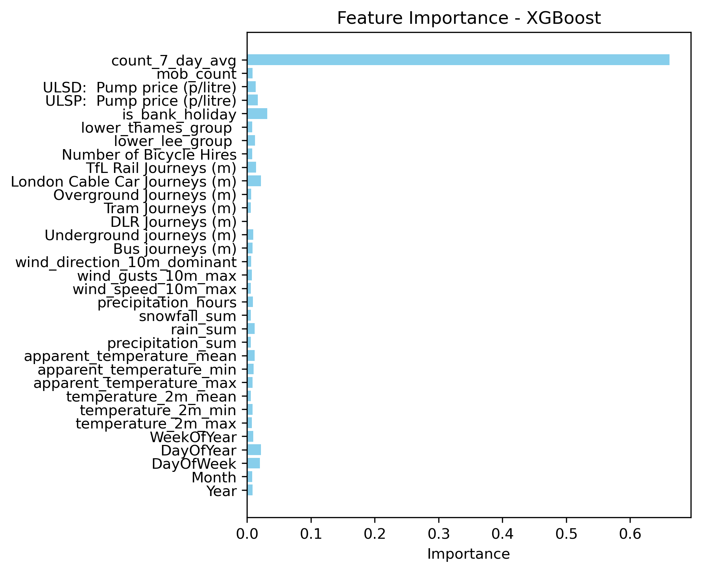

Prediction
Overview
The goal of this project is to predict the daily number of “use of force” (UoF) incidents by the police in London. This prediction could aid in resource allocation and planning for law enforcement agencies, ensuring they can effectively manage and respond to incidents.
Methods
Prediction, a core concept in machine learning and data science, involves forecasting continuous outcomes based on input data. In this project, predictive modeling techniques are used to estimate the number of UoF incidents on a given day. By analysing patterns and trends in historical data, these models aim to provide accurate forecasts that can aid in operational decision-making.
Model
The primary regression model used to predict the daily number of UoF incidents is XGBoost. Here’s a brief introduction to the model:
XGBoost:
XGBoost (Extreme Gradient Boosting) is an advanced machine learning algorithm that uses boosting techniques to improve prediction accuracy. It is known for its high performance and efficiency in handling large datasets with complex patterns.
Results
The performance of the XGBoost model is evaluated using common regression metrics such as Root Mean Squared Error (RMSE) and R-squared (R²). The results indicate that XGBoost provides high prediction accuracy.
Root Mean Squared Error (RMSE): - XGBoost: RMSE = 36.69
R-squared (R²): - XGBoost: R² = 0.897
The RMSE value indicates that, on average, the predicted number of UoF incidents deviates from the actual number by approximately 36.69 incidents. The R² value suggests that 89.7% of the variability in the number of daily UoF incidents is explained by the model. These metrics highlight the model’s effectiveness in providing accurate predictions and capturing the underlying patterns in the data.
Many points in the scatter plot are closely aligned with the red dashed line, indicating that the XGBoost model has a strong predictive ability. When the points lie directly on this line, it means that the predicted values are equal to the actual values. This close alignment suggests that the model captures the underlying pattern in the data effectively, providing reliable predictions for a substantial portion of the dataset.
However, some points deviate from the red dashed line, suggesting prediction errors. The spread of these points indicates the degree of error in the model’s predictions. A wider spread away from the line suggests greater prediction error, while a narrower spread indicates higher accuracy. Notably, the majority of data points are clustered in the mid-range values of both actual and predicted values. This concentration suggests that the model performs consistently well within this range. However, at the extremes (both high and low values), the spread appears larger, indicating that the model might have difficulty predicting extreme values accurately.

The chart clearly shows that the feature ‘count_7_day_avg’ has the highest importance score by a substantial margin. This suggests that the average count over the past seven days is the most influential factor in the model’s predictions. Such a high importance score indicates that this feature provides significant predictive power and has a strong correlation with the target variable.
Following ‘count_7_day_avg’, the feature ‘mob_count’ also shows notable importance, albeit much lower than the top feature. This suggests that while the count of mobile events contributes to the model’s predictions, its impact is significantly less compared to the seven-day average count. Other features such as ‘ULSD: Pump price (p/litre)’, ‘ULSP: Pump price (p/litre)’, and ‘is bank holiday’ have minimal importance scores, indicating that these factors contribute very little to the model’s predictive ability.
Interestingly, several weather-related features like ‘precipitation_sum’, ‘rain_sum’, and ‘apparent_temperature_mean’ have negligible importance. This suggests that weather conditions, despite being potentially relevant in some contexts, do not significantly influence the predictions in this specific model. Similarly, temporal features such as ‘WeekOfYear’, ‘DayOfYear’, and ‘DayOfWeek’ also show low importance scores, indicating that the specific time periods do not greatly impact the model’s predictions.